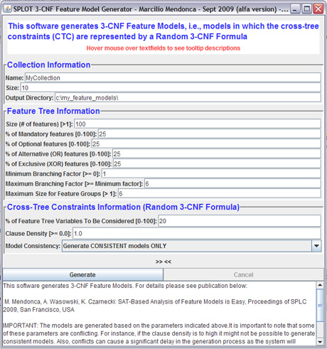

SPLOT Feature Model Generator
|  |
SPLOT Feature Model Generator generates 3-CNF Feature Models (3-CNF-FMs) (see explanation below) based on a set of input parameters. For details about 3-CNF-FMs and their relevance to Feature Modeling research, please check the following publication:
- Marcilio Mendonca, Andrzej Wasowski, Krzysztof Czarnecki: SAT-based Analysis of Feature Models is Easy. In Proceedings of the 13th International Software Product Line Conference (SPLC'09). Aug 2009, San Francisco, CA, USA.